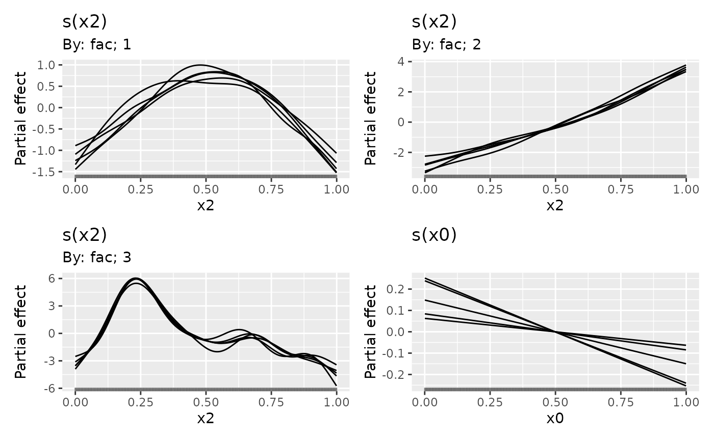

Returns draws from the posterior distributions of smooth functions in a GAM. Useful, for example, for visualising the uncertainty in individual estimated functions.
Usage
smooth_samples(model, ...)
# S3 method for gam
smooth_samples(
model,
term = NULL,
n = 1,
newdata = NULL,
seed = NULL,
freq = FALSE,
unconditional = FALSE,
ncores = 1L,
n_vals = 200,
...
)Arguments
- model
a fitted model of the supported types
- ...
arguments passed to other methods. For
fitted_samples(), these are passed on topredict.gam().- term
character; select which smooth's posterior to draw from. The default (
NULL) means the posteriors of all smooths inmodelwil be sampled from. If supplied, a character vector of requested terms.- n
numeric; the number of posterior samples to return.
- newdata
data frame; new observations at which the posterior draws from the model should be evaluated. If not supplied, the data used to fit the model will be used for
newdata, if available inmodel.- seed
numeric; a random seed for the simulations.
- freq
logical;
TRUEto use the frequentist covariance matrix of the parameter estimators,FALSEto use the Bayesian posterior covariance matrix of the parameters.- unconditional
logical; if
TRUE(andfreq == FALSE) then the Bayesian smoothing parameter uncertainty corrected covariance matrix is used, if available.- ncores
number of cores for generating random variables from a multivariate normal distribution. Passed to
mvnfast::rmvn(). Parallelization will take place only if OpenMP is supported (but appears to work on Windows with currentR).- n_vals
numeric; how many locations to evaluate the smooth at if
newdatanot supplied
Value
A tibble with additional classes "smooth_samples" and
`"posterior_samples".
For the "gam" method, the columns currently returned (not in this order)
are:
smooth; character vector. Indicates the smooth function for that particular draw,term; character vector. Similar tosmooth, but will contain the full label for the smooth, to differentiate factor-by smooths for example.by_variable; character vector. If the smooth involves abyterm, the by variable will be named here,NA_character_otherwise.row; integer. A vector of valuesseq_len(n_vals), repeated ifn > 1L. Indexes the row innewdatafor that particular draw.draw; integer. A vector of integer values indexing the particular posterior draw that each row belongs to.value; numeric. The value of smooth function for this posterior draw and covariate combination..xN; numeric. A series of one or more columns containing data required for the smooth..x1will always be present and contains the values of the covariate in the smooth. For example ifsmoothiss(z)then.x1will contain the values of covariatezat which the smooth was evaluated. Further covariates for multi-dimensional thin plate splines (e.g.s(x, z)) or tensor product smooths (e.g.te(x,z,a)) will result in variables.x1and.x2, and.x1,.x2, and.x3respectively, with the number (1,2, etc) representing the order in which the covariates were specified in the smooth.Additional columns will be present in the case of factor by smooths, which will contain the level for the factor named in
by_variablefor that particular posterior draw.
Warning
The set of variables returned and their order in the tibble is subject to change in future versions. Don't rely on position.
Examples
load_mgcv()
op <- options(cli.unicode = FALSE)
dat <- data_sim("eg1", n = 1000, seed = 2)
m1 <- gam(y ~ s(x0) + s(x1) + s(x2) + s(x3), data = dat, method = "REML")
smooth_samples(m1, term = "s(x0)", n = 5, seed = 42)
#> # A tibble: 1,000 x 7
#> smooth term by_variable .x1 row draw value
#> <chr> <chr> <chr> <dbl> <int> <int> <dbl>
#> 1 s(x0) s(x0) NA 0.000663 1 1 -0.961
#> 2 s(x0) s(x0) NA 0.00568 2 1 -0.933
#> 3 s(x0) s(x0) NA 0.0107 3 1 -0.906
#> 4 s(x0) s(x0) NA 0.0157 4 1 -0.878
#> 5 s(x0) s(x0) NA 0.0207 5 1 -0.850
#> 6 s(x0) s(x0) NA 0.0258 6 1 -0.822
#> 7 s(x0) s(x0) NA 0.0308 7 1 -0.795
#> 8 s(x0) s(x0) NA 0.0358 8 1 -0.768
#> 9 s(x0) s(x0) NA 0.0408 9 1 -0.740
#> 10 s(x0) s(x0) NA 0.0458 10 1 -0.713
#> # ... with 990 more rows
## A factor by example (with a spurious covariate x0)
dat <- data_sim("eg4", n = 1000, seed = 2)
## fit model...
m2 <- gam(y ~ fac + s(x2, by = fac) + s(x0), data = dat)
sms <- smooth_samples(m2, n = 5, seed = 42)
draw(sms)

options(op)